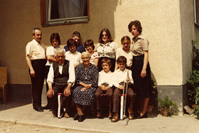

Familienalbum
Family Album
Ludwig Wüst – Austria 2015
87 min – HD – German OV – World premiere
Sc+P: Ludwig Wüst – DoP: Klemens Koscher, Andrew Brown, Samuel Käppeli, Matthias Reiter-Pazmandy, Ludwig Wüst – S: Tjandra Warsosumarto – E: Samuel Käppeli – www.heimat-film.net
"The episodic structure of the film approaches the source of the first issues man can ask his life: where am I coming from, who am I? Who or what do I want to be? Scatches of people from age 7 until 70 are drawn by themselves. Only authentic persons appear, no actors at all! In no sequence the film has been manufactured in a conventional way but instead was directed by the actors. That means the film has many directors who put their personal ideas in this work. This kind of cinematographic approach interests me since many years: to let the director disappear completely." – Ludwig Wüst
saturday 10 oct 6.30 pm werkstattkino
Ludwig Wüst geb. 1965 in der Oberpfalz, lebt und arbeitet seit 1987 als Regisseur, Schauspieler und Autor in Wien. Er schreibt und inszeniert für renommierte Theater- und Opernhäuser. 1998 partizipiert er an Hermann Nitschs 6-Tages-Spektakel auf Schloss Prinzendorf.
Filme (Auswahl) Zwei Frauen 2006 - KOMA 2009 - Tape End 2011 - Das Haus meines Vaters 2013 - Abschied 2014